Install pyBIS and set up your workshop environment
A step-by-step guide for researchers with no prior experience using Python or command-line tools such as Miniforge Prompt, or Jupyter Notebooks.
This guide helps you prepare your computer to work with pyBIS for the first time. It includes a pybis environment required for the workshop. You do not need previous programming experience.
What tools will you use?
- Python: the programming language used in the workshop.
- pyBIS: a Python package for communicating with openBIS.
- Miniforge3: a minimal installer for conda, which is used here to create and manage the isolated Python environment and install workshop packages.
- Visual Studio Code (VS Code): an application for writing and running code.
- Jupyter Notebook: an interactive document where you can write and run Python code one cell at a time.
- Python environment: a separate workspace containing a Python version and the packages needed for the workshop.
Step 1: Install Visual Studio Code
1.1 Install VS Code
- Open the Symantec Software Portal.
- Search for Visual Studio Code and install it.
- Open VS Code from the Windows Start menu.
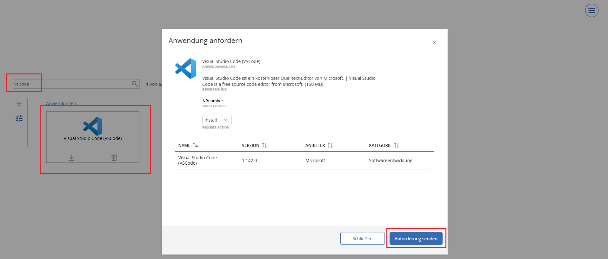
1.2 Install the Python and Jupyter extensions
- In VS Code, click the Extensions icon (four squares) in the left sidebar.
- Search for Python, select the extension published by Microsoft, and click Install.
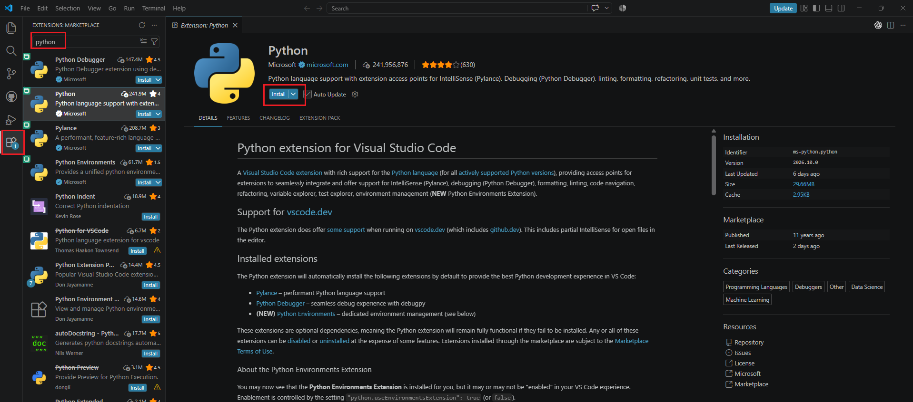
- Search for Jupyter, select the extension published by Microsoft, and click Install.
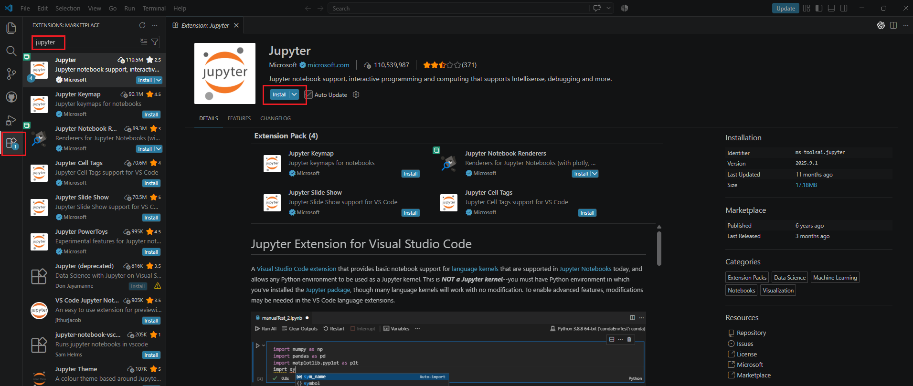
If you see Installed or Uninstall, the extension is already installed.
Step 2: Create pybis environment and install pyBIS package
A Python environment keeps the workshop packages together and separate from other Python projects.
For this workshop, you will create an environment called pybis. You can continue using it for working with pyBIS package after the workshop.
Good to know: Different projects may need different Python versions or packages. Creating a separate environment for each project helps prevent conflicts when packages are installed or updated. If an environment stops working, you can recreate it without affecting your other environments.
2.1 Install Miniforge3
- Open the Symantec Software Portal.
- Search for Miniforge.
- Install Miniforge3 and wait until installation is complete.
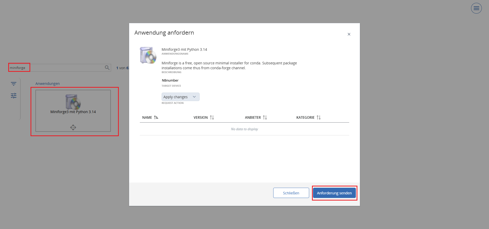
2.2 Open Miniforge Prompt
- Click the Windows Start button.
- Search for Miniforge Prompt and open it.
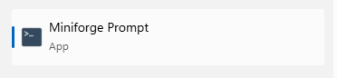
Miniforge Prompt is a s a window where you type commands to tell your computer what to do. You will use it to create a Python environment and install packages.
For each command below, copy the text from the code box, paste it into the Miniforge Prompt (usually using Ctrl + V or right-click), and press Enter. Wait until the command finishes before continuing.
2.3 Create the pybis environment
- Copy the command below, paste it into the Miniforge Prompt, and press Enter:
conda create --name pybis --channel conda-forge python=3.14pybis with Python 3.14. conda-forge is the package repository to obtain the software.
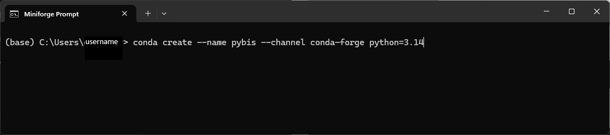
If the Miniforge Prompt asks Proceed ([y]/n)?, type y and press Enter.
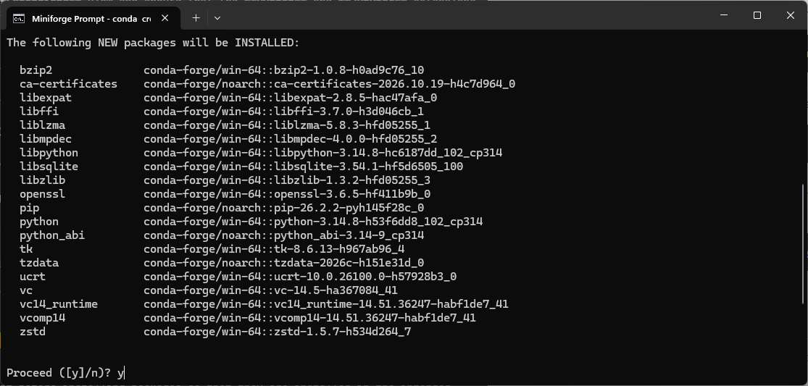
2.4 Activate the environment
- Copy the command below, paste it into the Miniforge Prompt, and press Enter:
conda activate pybisYou should see (pybis) at the beginning of the command line, for example (pybis) C:\Users\yourusername>. This indicates that the environment is activate in Miniforge Prompt.
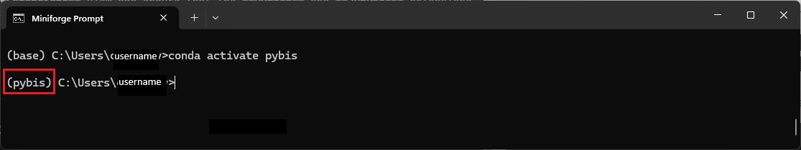
2.5 Install pyBIS and prepare the environment for Jupyter Notebooks
- Copy the command below, paste it into the Miniforge Prompt, and press Enter.
conda install --channel conda-forge pybis ipykernelThe pyBIS package lets Python communicate with openBIS. The ipykernel allows Jupyter Notebooks to run Python code using this environment.
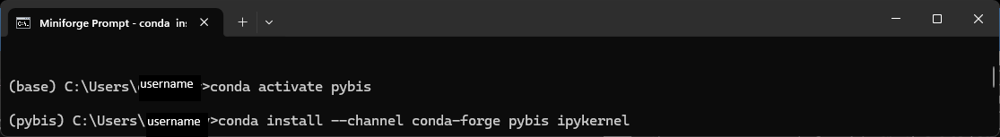
pybis environment is ready. Close Miniforge Prompt and continue to Step 3.Step 3: Open a Jupyter Notebook and select the pybis environment
3.1 Open a Jupyter Notebook in VS Code
- Open Visual Studio Code (VS Code).
- Choose File → New File.
- Select Jupyter Notebook.
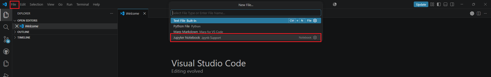
3.2 Select the pybis environment
Before running Python code, choose which Python environment the notebook will use. In a Jupyter Notebook, this is means selecting a kernel (the Python interpreter that runs your code).
- Click Select Kernel in the upper-right corner of the notebook.

- Choose Python Environments.
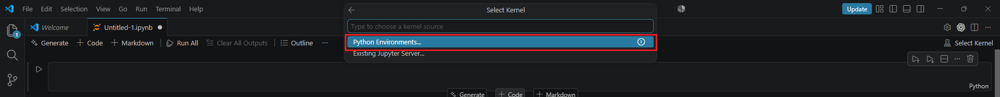
- Select the
pybisenvironment you created in Step 2.

pybis environment.pybis environment. You should see pybis in the upper-right corner.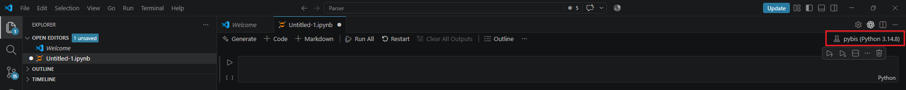
pybis environment is selected.Step 4: Test your pyBIS installation
4.1 Run your first Python code
- Copy the code below and paste it into a notebook code cell.
- Press
Shift + Enterto run the code.
print("Hello! My Python environment is working.")You should see:
Hello! My Python environment is working.This confirms that the notebook can run Python code.
4.2 Check that pyBIS is installed
- Move your mouse below the code cell you just ran.
- Click + Code to add a new code cell.
- Copy the code below, paste it into the new cell and press Shift + Enter.
import pybis
print("pyBIS was imported successfully!")You should see the following output:
pyBIS was imported successfully!import mean? In Python, import makes a package available for use in your code. If the cell runs without errors, pyBIS can be imported from the selected environment. You do not need to connect to an openBIS server for this test.4.3 Save the notebook
- Press
Ctrl + Shift + S.
- Choose a folder you can find again and save the notebook as
pybis_installation_test.ipynb.
The .ipynb extension identifies a Jupyter Notebook file.
Troubleshooting: Common issues
I cannot find Miniforge Prompt
Search for Miniforge Prompt in the Windows Start menu. If it is missing, check that Miniforge3 finished installing through the Software Portal.
My Miniforge Prompt says a command is not recognized
If conda is not recognized, make sure you opened Miniforge Prompt rather than PowerShell.
VS Code cannot find my Python environment
- Check that the Microsoft Python and Jupyter extensions are installed.
- Restart VS Code and click Select Kernel → Python Environments.
- Select the
pybisenvironment.
I see “No module named pybis”
The notebook may be using the wrong environment. Click Select Kernel → Python Environments, choose pybis, and run the test again. If the error continues, return to Step 2.5 to check that pyBIS was installed.
Installation fails because of a network or permission error
Check that you are connected to your organization's network or VPN, then retry. If the error persists, contact IT support or the Data Store Team.
How to update packages installed in the pybis environment
If you haven't used the pybis environment for a while, you may want to update its installed packages to the latest compatible versions. Open the Miniforge Prompt and run the following commands:
conda update -n pybis --all -c conda-forge